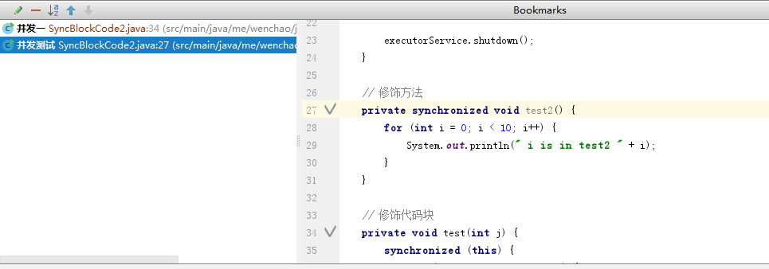

Intellij IDEA 小技巧¶
输入Json串¶
String str = “”;
定位到引号之间 alt+enter ，选择inject language or reference —> json —> alt + enter —> edit json fragment
ctrl+shift+enter 不只是用来行尾加分号的¶
ctrl+shift+enter 表示 收尾 的意思
比如
if (s == null)
这个时候输入 ctrl+shift+enter ，IDEA会自动加上大括号
不要动不动就用idea重构功能¶
把鼠标定位到project视图中¶
alt+F1 —> project view –> Project
按照模板找内容¶
ctrl + shifte + a —> Search Structurally –> 回车跳转到模板视图 —> 点击 existing templates 按钮 ，选择 try 模板
为了能找出 catch 里面没有处理了异常的代码块，我们需要配置一下 CatchStatement 的 Maxinum count 的值 为 1
点击 edit variable,在界面修改 Maximun count 的值
最后点击 find 按钮
ctrl+shift+a find action¶
在idea中，每一个操作都可以看作是一个action，使用 ctrl+shift+a –> 输入action名称即可
ctrl+alt+h call Hierarchy¶
ctrl+alt+h —-> 调用层次： f4 进入源代码； alt + 8 回到 调用视图
alt + F7 —> find usage in File
bookmark – 了解项目关键业务流程方法的利器¶
将你觉得关键的方法加入标记
步骤如下：
- 找到你 care about 的方法，按f11，加入到bookmark中
- 按下 shift + f11，将bookmark列表弹出来
- 按下 ctrl + enter 修改 bookmar 的名字
如何阅读又臭又长的代码¶
- 折叠代码块 定位到想要折叠的代码块，输入 ctrl + shift + . ; ctrl + + 取消
- 括号匹配 将光标定位到括号的一边， ctrl + [/] 来回定位即可
- 定位变量 ctrl + shift + f7 可以高亮某个变量 ， f3 找到下一个
- ctrl + shift + i 可以查看代码中某个类的定义，定位到类，按该快捷键
- alt + f7 找到使用的地方
切换皮肤¶
ctrl + ` 快捷键